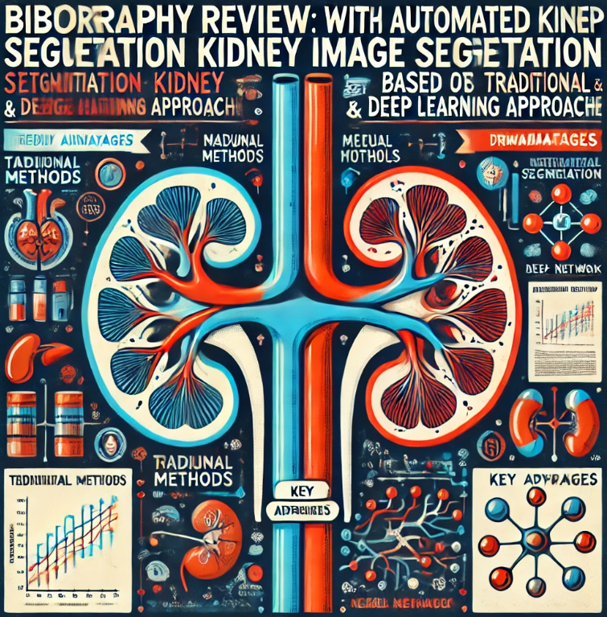
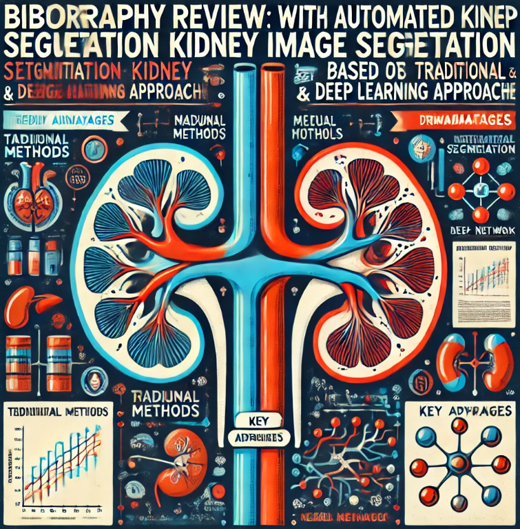

About Me
 I am passionate about multiple aspects of medical imaging, including classification,
segmentation, registration, and landmark identification. My enthusiasm for these fields drives
my desire to collaborate on innovative healthcare technology projects. Specifically, I am
interested in AI-driven diagnostics, telemedicine solutions, and patient data analysis. I
believe that advancements in these areas have the potential to revolutionize healthcare,
improving patient outcomes and enhancing the efficiency of medical services.
I am passionate about multiple aspects of medical imaging, including classification,
segmentation, registration, and landmark identification. My enthusiasm for these fields drives
my desire to collaborate on innovative healthcare technology projects. Specifically, I am
interested in AI-driven diagnostics, telemedicine solutions, and patient data analysis. I
believe that advancements in these areas have the potential to revolutionize healthcare,
improving patient outcomes and enhancing the efficiency of medical services.
I am excited about the opportunities to continue developing my skills and knowledge in medical
imaging. By contributing to cutting-edge research and collaborating on impactful projects, I aim
to make meaningful contributions to the healthcare industry. My goal is to be at the forefront
of technological advancements that can transform medical practices and improve patient care
worldwide.


 
